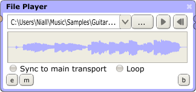

File Player Processor

The File Player processor can be used to play back sound files. It supports the following sound file formats:
- .wav
- .aiff
- .flac
- .ogg
- .wma (Windows-only)
In addition to the standard double-click method of creating processors, File Players can be created by simply dragging a sound file from your Operating System's file browser into the main plugin field.
The controls are as follows:
This is used to load a sound file. Note the drop-down button, which can be used to select a previously-loaded file.
Starts the file playing from the player's current position within the file. If the file is already playing, clicking the button will pause it.
Returns the player's position within the file to the start of the file.
If this is toggled on, the player's transport (the play/pause and return-to-zero buttons) will be synced to the app's main transport (the two buttons in the centre of the lower panel in the main window). This means that hitting play on the main transport will start the File Player playing, and can be used to start multiple File Players playing at the same time.

If this is toggled on, the player will loop its sound file (return to the start of the file when it reaches the end).
Trigger
The File Player has one more control which is not represented visually. If you open its mappings window you will see a Trigger parameter. This is essentially a combination of the Play and Return to Zero buttons. When a signal > 0.5 is received on this parameter, the player will set its position to the start of the file, and start it playing. This allows the File Player to be used as a rudimentary sampler.